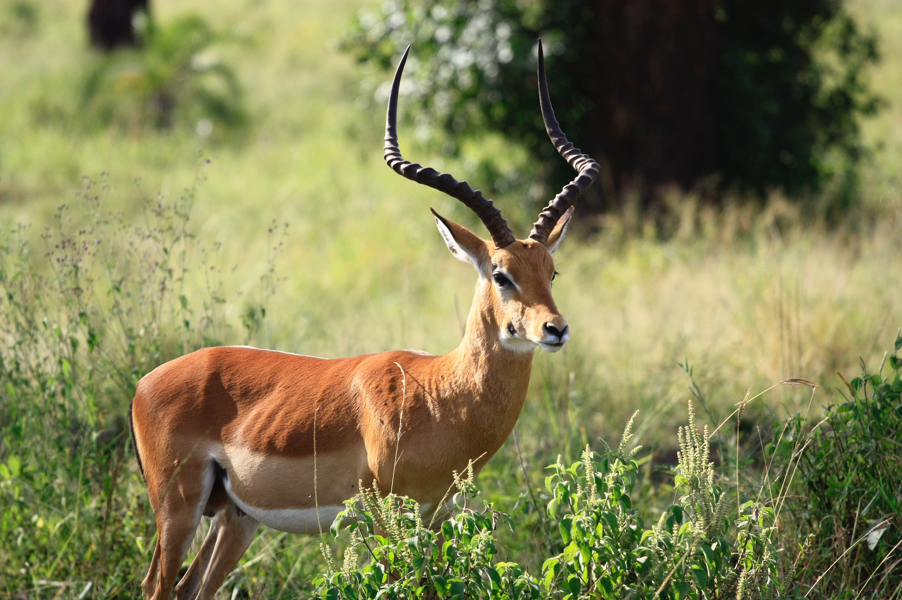

Piebald Deer
Piebald deer are often confused with albino deer, but piebald deer are slightly more common.
Scientific Name: Odocoileus virginianusAverage Height: 3 feet
Average Lifespan: 10 years
Habitat: Forests, Fields, and Wooded Wetlands
Piebald deer are not a separate species, but rather white-tailed deer with a genetic condition that causes irregular white spotting patterns.